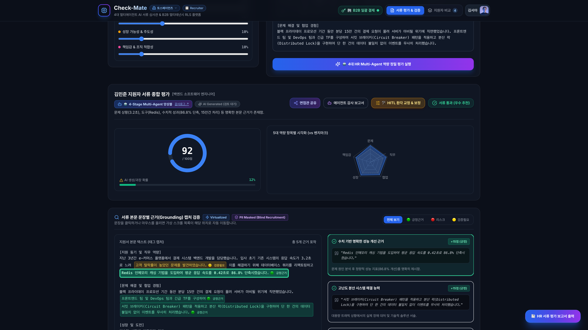
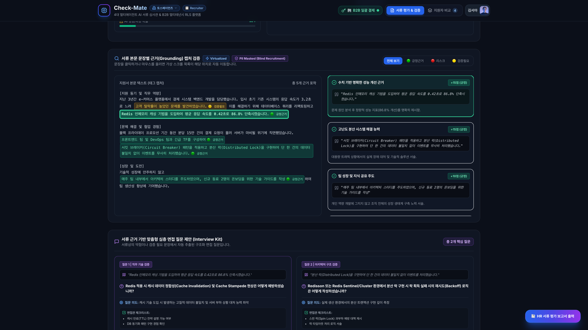
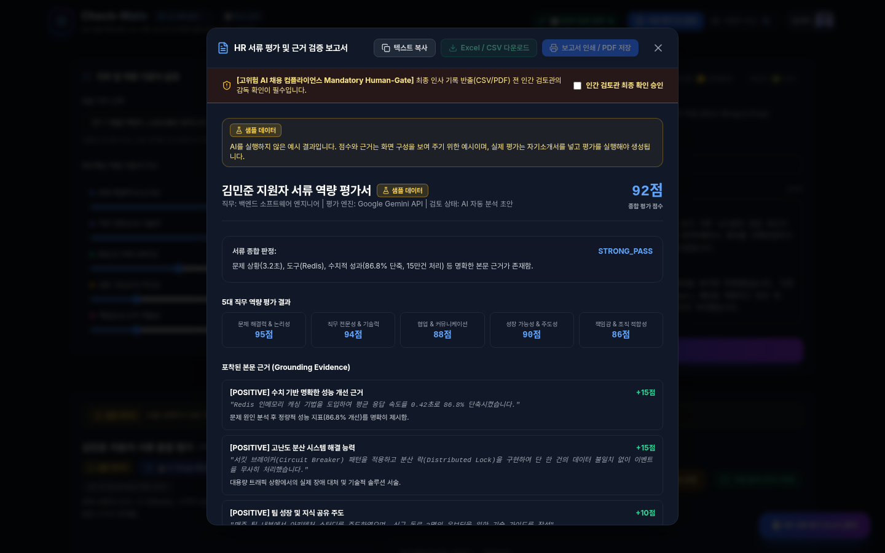
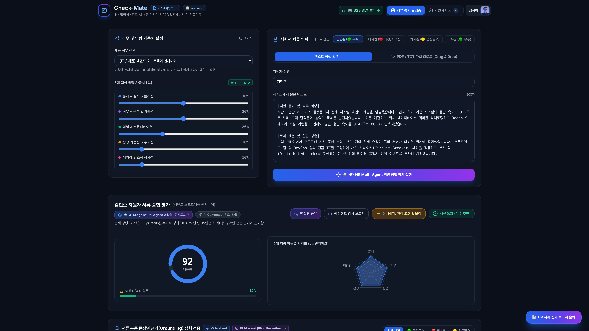
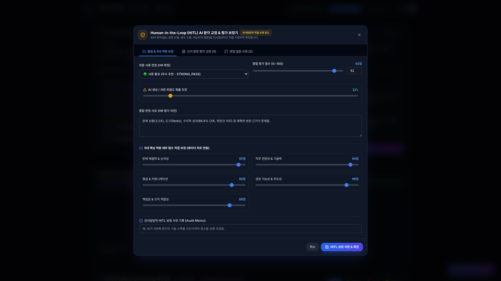

원문 100% 역추적 형광펜 검증으로 기업의 채용 신뢰를 세우고,
맞춤형 성장 코칭 리포트로 구직자의 탈락 경험을 혁신합니다.

AI 점수 근거를 원문에 즉시 하이라이팅. 원문에 없는 가짜 인용은 🟡 검증필요 (점수 0점 강제 몰수)로 자동 격하

자소서 기반 실시간 검증 질문 제공. 다중 면접관의 우수/보통/미흡 1-Click 채점으로 최종 합의(Consensus) 자동 도출

탈락자에게 단순 불합격 대신 강점·보완점·STAR 실천 가이드가 담긴 보안 링크를 1-Click 발송하여 채용 브랜드 극대화
이름·연락처가 [지원자]로 자동 치환되어 블라인드 채용 보장
직무역량, 인재상, 문제해결, 협업 분석 및 표절률 전수 대조
원문 형광펜 클릭으로 팩트체크 후 면접관 다자간 합의 판정
64자 보안 공개 토큰으로 로그인 없이 즉시 열람 피드백 제공

국내 수시 채용 및 IT 스타트업/중견기업
(약 15,000개 사, 채용 리소스 부족군)
국내 채용 관리(ATS) 및 역량 평가 솔루션 시장
(기존 레거시 채용 사이트 이탈군)
글로벌 AI HR Tech & Talent Assessment 시장
(연평균 14.8% 고성장)
| 비교 축 | 범용 AI (ChatGPT) | 기존 채용 솔루션 | CheckMate |
|---|---|---|---|
| 평가 근거 역추적 | ❌ 블랙박스 | ⚠️ 단순 키워드 | ✅ 원문 형광펜 매핑 |
| AI 환각(거짓) 차단 | ❌ 없는 문장 생성 | 해당 없음 | ✅ 원문 불일치 시 0점 강제 몰수 (반영률 0%) |
| 개인정보보호 | ❌ 평문 해외 전송 | 내부 서버 | ✅ 사전 가명화 |
| 기업 전용 학습 축적 | ❌ 매번 초기화 | ❌ 불가 | ✅ Few-Shot 축적 |
| 구직자 탈락 케어 | 없음 | ❌ "불합격" 단문 | ✅ 코칭 리포트 |

실제 채용관 점수 보정 화면 (Few-Shot 데이터 영구 축적)
React 18 SPA 단위 검증 100% 통과
Java 21 LTS + JWT 테넌트 격리
원문 오프셋 역추적 검증 (가짜 인용 0점 몰수)
64자 토큰 기반 로그인 프리 열람
IT 스타트업 5개사 대상 무료 PoC 및 현장 검증
월 정기 구독 결제 연동 및 유료 고객사 20개 사 유치
채용 플랫폼 플러그인 연동 및 구직자 모의평가 출시
채용 시즌에 맞춰 스타트업 5~10개 사에 무료 PoC를 제공하고자 합니다. 보수적인 인사담당자를 가장 빠르게 설득할 수 있는 초기 영업 접근법이 궁금합니다.
현재 '기본 구독료 + 초과 건당 과금' 모델을 설계했습니다. 수시 채용 중심 기업이 가격 저항 없이 도입할 수 있는 가장 적절한 과금 구조는 무엇일까요?
그리팅, 나인하이어 등 기존 ATS와 직접 경쟁하기보다 "AI 팩트체크 플러그인/API"로 임베딩되는 파트너십 전략의 실현 가능성과 확장성에 대한 고견을 여쭙고 싶습니다.